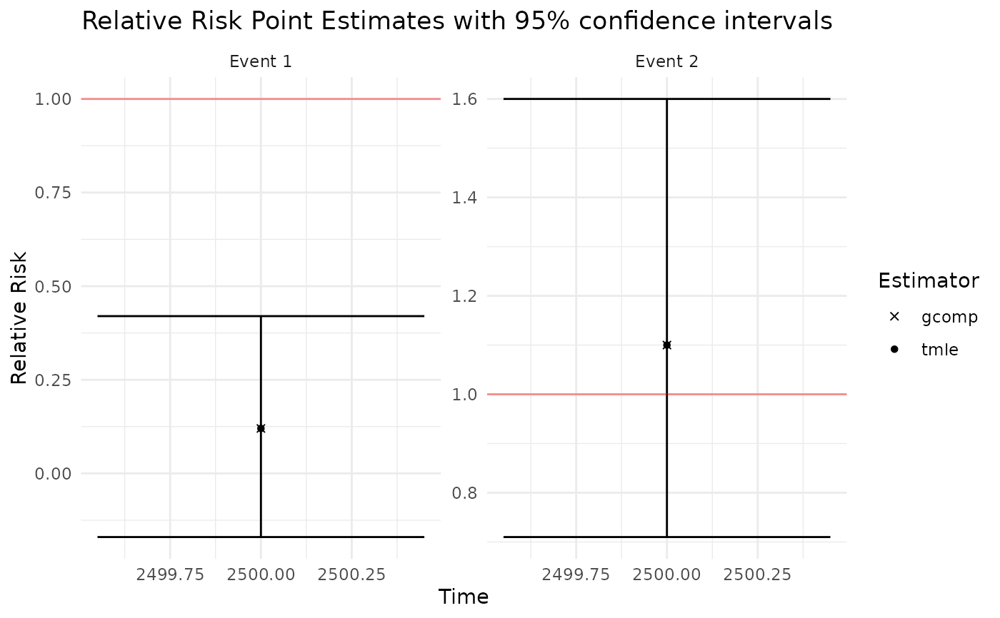
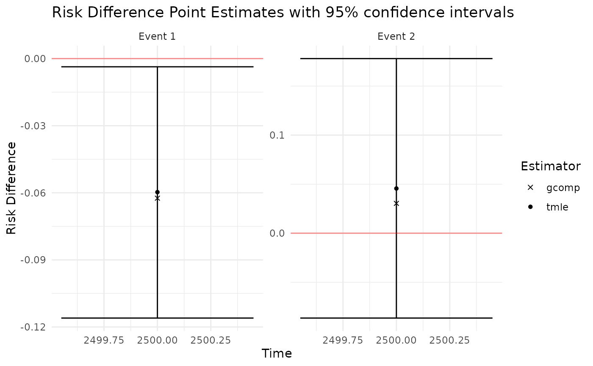
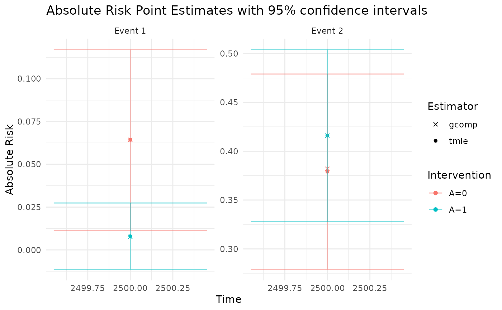

getOutput
Arguments
- ConcreteEst
"ConcreteEst" object
- Estimand
character: "RR" for Relative Risks, "RD" for Risk Differences, and "Risk" for absolute risks
- Intervention
numeric (default = seq_along(ConcreteEst)): the ConcreteEst list element corresponding to the target intervention. For comparison estimands such as RD and RR, Intervention should be a numeric vector with length 2, the first term designating "treatment" ConcreteEst list element and the second designating the "control".
- GComp
logical: return g-formula point estimates based on initial nuisance parameter estimation
- Simultaneous
logical: return simultaneous confidence intervals
- Signif
numeric (default = 0.05): alpha for 2-tailed hypothesis testing
- x
a ConcreteOut object
- NullLine
logical: to plot a red line at y=1 for RR plots and at y=0 for RD plots
- ask
logical: to prompt for user input before each plot
- ...
additional arguments to be passed into plot methods
Examples
library(data.table)
library(concrete)
data <- as.data.table(survival::pbc)
data <- data[1:200, .SD, .SDcols = c("id", "time", "status", "trt", "age", "sex")]
data[, trt := sample(0:1, nrow(data), TRUE)]
#> id time status trt age sex
#> <int> <int> <int> <int> <num> <fctr>
#> 1: 1 400 2 1 58.76523 f
#> 2: 2 4500 0 1 56.44627 f
#> 3: 3 1012 2 1 70.07255 m
#> 4: 4 1925 2 1 54.74059 f
#> 5: 5 1504 1 0 38.10541 f
#> ---
#> 196: 196 2363 0 0 57.04038 f
#> 197: 197 2365 0 0 44.62697 f
#> 198: 198 2357 0 0 35.79740 f
#> 199: 199 1592 0 0 40.71732 f
#> 200: 200 2318 0 1 32.23272 f
# formatArguments() returns correctly formatted arguments for doConcrete()
concrete.args <- formatArguments(DataTable = data,
EventTime = "time",
EventType = "status",
Treatment = "trt",
ID = "id",
TargetTime = 2500,
TargetEvent = c(1, 2),
Intervention = makeITT(),
CVArg = list(V = 2))
# doConcrete() returns tmle (and g-formula plug-in) estimates of targeted risks
# \donttest{
concrete.est <- doConcrete(concrete.args)
#>
#> Estimating Treatment Propensity:
#>
#> Estimating Hazards:
#> Warning: Loglik converged before variable 1 ; coefficient may be infinite.
#> Warning: Loglik converged before variable 1 ; coefficient may be infinite.
#> Warning: Loglik converged before variable 1,3 ; coefficient may be infinite.
#> Warning: Loglik converged before variable 1 ; coefficient may be infinite.
#> Trt Time Event PnEIC RelativeCriteria AbsPnEIC AbsoluteCriteria
#> <char> <num> <num> <num> <num> <num> <num>
#> 1: A=1 2500 2 0.07285502 0.008583377 0.07285502 0
#> 2: A=0 2500 2 0.06321258 0.009707607 0.06321258 0
#> 3: A=0 2500 1 -0.00664069 0.005088358 0.00664069 0
#> StopCriteria RelativeRatio AbsoluteRatio ratio StopRule StopAbsTol
#> <num> <num> <num> <num> <char> <num>
#> 1: 0.008583377 8.487921 Inf 8.49 relative 0
#> 2: 0.009707607 6.511654 Inf 6.51 relative 0
#> 3: 0.005088358 1.305075 Inf 1.31 relative 0
#> Norm PnEIC = 0.09669324
#>
#> Starting TMLE Update:
#> Problem dimension: k = 4
#> Using standard universal LFM approach (iterative small steps)
#> Starting step 1 with update epsilon = 0.1
#> Trt Time Event PnEIC RelativeCriteria AbsPnEIC AbsoluteCriteria
#> <char> <num> <num> <num> <num> <num> <num>
#> 1: A=1 2500 2 0.044751213 0.008542012 0.044751213 0
#> 2: A=0 2500 2 0.030840136 0.009656267 0.030840136 0
#> 3: A=1 2500 1 0.001681276 0.001830119 0.001681276 0
#> StopCriteria RelativeRatio AbsoluteRatio ratio StopRule StopAbsTol
#> <num> <num> <num> <num> <char> <num>
#> 1: 0.008542012 5.2389547 Inf 5.24 relative 0
#> 2: 0.009656267 3.1937948 Inf 3.19 relative 0
#> 3: 0.001830119 0.9186699 Inf 0.92 relative 0
#> Norm PnEIC = 0.05442394
#> Starting step 2 with update epsilon = 0.1
#> Trt Time Event PnEIC RelativeCriteria AbsPnEIC AbsoluteCriteria
#> <char> <num> <num> <num> <num> <num> <num>
#> 1: A=1 2500 2 0.012932223 0.008519048 0.012932223 0
#> 2: A=1 2500 1 0.002046468 0.001830152 0.002046468 0
#> 3: A=0 2500 1 0.001222929 0.005086634 0.001222929 0
#> StopCriteria RelativeRatio AbsoluteRatio ratio StopRule StopAbsTol
#> <num> <num> <num> <num> <char> <num>
#> 1: 0.008519048 1.5180362 Inf 1.52 relative 0
#> 2: 0.001830152 1.1181961 Inf 1.12 relative 0
#> 3: 0.005086634 0.2404201 Inf 0.24 relative 0
#> Norm PnEIC = 0.01325291
#> Starting step 3 with update epsilon = 0.1
#> Update increased the active convergence objective, halving OneStepEps
#> Starting step 3 with update epsilon = 0.05
#> Trt Time Event PnEIC RelativeCriteria AbsPnEIC
#> <char> <num> <num> <num> <num> <num>
#> 1: A=1 2500 1 0.0021908408 0.001830138 0.0021908408
#> 2: A=1 2500 2 -0.0062783594 0.008517584 0.0062783594
#> 3: A=0 2500 1 0.0008823547 0.005086230 0.0008823547
#> AbsoluteCriteria StopCriteria RelativeRatio AbsoluteRatio ratio StopRule
#> <num> <num> <num> <num> <num> <char>
#> 1: 0 0.001830138 1.1970904 Inf 1.20 relative
#> 2: 0 0.008517584 0.7371056 Inf 0.74 relative
#> 3: 0 0.005086230 0.1734791 Inf 0.17 relative
#> StopAbsTol
#> <num>
#> 1: 0
#> 2: 0
#> 3: 0
#> Norm PnEIC = 0.006836095
#> Starting step 4 with update epsilon = 0.05
#> Update increased the active convergence objective, halving OneStepEps
#> Starting step 4 with update epsilon = 0.025
#> Trt Time Event PnEIC RelativeCriteria AbsPnEIC AbsoluteCriteria
#> <char> <num> <num> <num> <num> <num> <num>
#> 1: A=1 2500 1 0.001961046 0.001830055 0.001961046 0
#> 2: A=1 2500 2 0.002745689 0.008517089 0.002745689 0
#> 3: A=0 2500 2 0.001330314 0.009636597 0.001330314 0
#> StopCriteria RelativeRatio AbsoluteRatio ratio StopRule StopAbsTol
#> <num> <num> <num> <num> <char> <num>
#> 1: 0.001830055 1.0715776 Inf 1.07 relative 0
#> 2: 0.008517089 0.3223741 Inf 0.32 relative 0
#> 3: 0.009636597 0.1380481 Inf 0.14 relative 0
#> Norm PnEIC = 0.003630426
#> Starting step 5 with update epsilon = 0.025
#> Update increased the active convergence objective, halving OneStepEps
#> Starting step 5 with update epsilon = 0.0125
#> Trt Time Event PnEIC RelativeCriteria AbsPnEIC
#> <char> <num> <num> <num> <num> <num>
#> 1: A=1 2500 1 0.0019160747 0.001830012 0.0019160747
#> 2: A=1 2500 2 -0.0009310162 0.008517041 0.0009310162
#> 3: A=0 2500 2 -0.0010016471 0.009636162 0.0010016471
#> AbsoluteCriteria StopCriteria RelativeRatio AbsoluteRatio ratio StopRule
#> <num> <num> <num> <num> <num> <char>
#> 1: 0 0.001830012 1.0470285 Inf 1.05 relative
#> 2: 0 0.008517041 0.1093122 Inf 0.11 relative
#> 3: 0 0.009636162 0.1039467 Inf 0.10 relative
#> StopAbsTol
#> <num>
#> 1: 0
#> 2: 0
#> 3: 0
#> Norm PnEIC = 0.002375917
#> Starting step 6 with update epsilon = 0.0125
#> Update increased the active convergence objective, halving OneStepEps
#> Starting step 6 with update epsilon = 0.00625
#> Trt Time Event PnEIC RelativeCriteria AbsPnEIC
#> <char> <num> <num> <num> <num> <num>
#> 1: A=1 2500 1 1.831708e-03 0.001829972 1.831708e-03
#> 2: A=0 2500 2 3.998299e-04 0.009636406 3.998299e-04
#> 3: A=1 2500 2 5.638105e-05 0.008517023 5.638105e-05
#> AbsoluteCriteria StopCriteria RelativeRatio AbsoluteRatio ratio StopRule
#> <num> <num> <num> <num> <num> <char>
#> 1: 0 0.001829972 1.000948461 Inf 1.00 relative
#> 2: 0 0.009636406 0.041491603 Inf 0.04 relative
#> 3: 0 0.008517023 0.006619808 Inf 0.01 relative
#> StopAbsTol
#> <num>
#> 1: 0
#> 2: 0
#> 3: 0
#> Norm PnEIC = 0.001876609
#> Starting step 7 with update epsilon = 0.00625
#> Trt Time Event PnEIC RelativeCriteria AbsPnEIC
#> <char> <num> <num> <num> <num> <num>
#> 1: A=1 2500 1 0.0017454556 0.001829927 0.0017454556
#> 2: A=0 2500 2 -0.0002758099 0.009636282 0.0002758099
#> 3: A=0 2500 1 0.0001007112 0.005085864 0.0001007112
#> AbsoluteCriteria StopCriteria RelativeRatio AbsoluteRatio ratio StopRule
#> <num> <num> <num> <num> <num> <char>
#> 1: 0 0.001829927 0.95383909 Inf 0.95 relative
#> 2: 0 0.009636282 0.02862202 Inf 0.03 relative
#> 3: 0 0.005085864 0.01980218 Inf 0.02 relative
#> StopAbsTol
#> <num>
#> 1: 0
#> 2: 0
#> 3: 0
#> Norm PnEIC = 0.001770047
# getOutput returns risk difference, relative risk, and treatment-specific risks
# GComp=TRUE returns g-formula plug-in estimates
# Simultaneous=TRUE computes simultaneous CI for all output TMLE estimates
concrete.out <- getOutput(concrete.est, Estimand = c("RR", "RD", "Risk"),
GComp = TRUE, Simultaneous = TRUE)
print(concrete.out)
#> Time Event Estimand Intervention Estimator Pt Est se CI Low CI Hi
#> <num> <num> <char> <char> <char> <num> <num> <num> <num>
#> 1: 2500 1 Abs Risk A=0 tmle 0.0680 0.0270 0.015 0.1200
#> 2: 2500 1 Abs Risk A=0 gcomp 0.0710 NA NA NA
#> 3: 2500 1 Abs Risk A=1 tmle 0.0083 0.0097 -0.011 0.0270
#> 4: 2500 1 Abs Risk A=1 gcomp 0.0085 NA NA NA
#> 5: 2500 1 Rel Risk [A=1] / [A=0] tmle 0.1200 0.1500 -0.170 0.4200
#> 6: 2500 1 Rel Risk [A=1] / [A=0] gcomp 0.1200 NA NA NA
#> 7: 2500 1 Risk Diff [A=1] - [A=0] tmle -0.0600 0.0290 -0.120 -0.0037
#> 8: 2500 1 Risk Diff [A=1] - [A=0] gcomp -0.0620 NA NA NA
#> 9: 2500 2 Abs Risk A=0 tmle 0.3400 0.0510 0.240 0.4400
#> 10: 2500 2 Abs Risk A=0 gcomp 0.3100 NA NA NA
#> 11: 2500 2 Abs Risk A=1 tmle 0.3800 0.0450 0.300 0.4700
#> 12: 2500 2 Abs Risk A=1 gcomp 0.3400 NA NA NA
#> 13: 2500 2 Rel Risk [A=1] / [A=0] tmle 1.1000 0.2100 0.710 1.6000
#> 14: 2500 2 Rel Risk [A=1] / [A=0] gcomp 1.1000 NA NA NA
#> 15: 2500 2 Risk Diff [A=1] - [A=0] tmle 0.0460 0.0670 -0.087 0.1800
#> 16: 2500 2 Risk Diff [A=1] - [A=0] gcomp 0.0300 NA NA NA
#> SimCI Low SimCI Hi
#> <num> <num>
#> 1: -0.0034 0.140
#> 2: NA NA
#> 3: -0.0170 0.034
#> 4: NA NA
#> 5: -0.2800 0.520
#> 6: NA NA
#> 7: -0.1400 0.016
#> 8: NA NA
#> 9: 0.2000 0.470
#> 10: NA NA
#> 11: 0.2600 0.500
#> 12: NA NA
#> 13: 0.5700 1.700
#> 14: NA NA
#> 15: -0.1300 0.220
#> 16: NA NA
plot(concrete.out, ask = FALSE)



# }